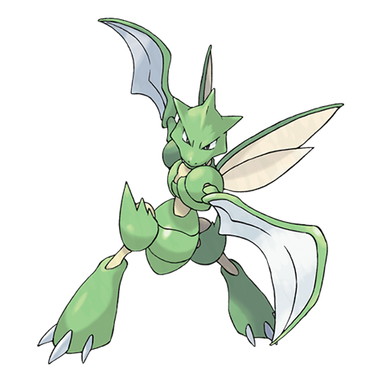

Назад
Скайтер

Скайтер — Покемон 1 поколения под номером 123 в Покедекс. Обитает он в регионе Kanto и относится к Жучиному и Летающему типу. Скайтер невероятно быстр. Его молниеносная скорость увеличивает эффективность двойной косы на его предплечьях. Косы этого Покемона настолько эффективны, что могут разрезать толстые брёвна одним ударом.
Тип:
Жук
Летающий
Эволюция
# 123 Скайтер